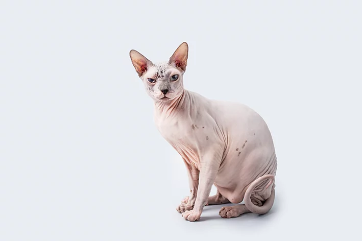

1 - American Curl
Introduzido nos EUA em 1981, o American Curl possui orelhas curvadas para trás e dois tipos de pelagem: curta e semi-comprida. Comum na América do Norte, é raro em outras regiões. Reconhecido por sua forte imunidade, o American Curl é um gato de temperamento equilibrado que ama as pessoas, sendo discreto e evitando comportamentos ruidosos.

2 - Gato Burmês Europeu
O gato Burmês Europeu, semelhante a um cão em lealdade, ama seu dono e o segue. Existem dois padrões de raça: americano e europeu, com diferenças na aparência. Mantém-se brincalhão e ativo até a velhice, gostando de correr atrás de bolas. Sensível ao humor do dono, ajusta seu comportamento para dar atenção ou animá-lo conforme necessário.

3 - Havana Brown
O Havana Brown é resultado do cruzamento de um gato siamês com um gato preto doméstico, caracterizado pela cor chocolate, focinho estreito e grandes orelhas. Muito inteligente e curioso, ao contrário de outros gatos, corre para encontrar visitantes. Alguns gostam de subir nos ombros das pessoas, além de sentar-se em seus braços.

4 - Bobtail americano
O Bobtail americano é uma raça de gatos de cauda curta que aparenta ser selvagem, mas tem um caráter não agressivo e bem-humorado. Musculosos e fortes, variam de tamanho médio a grande. Inteligentes e afetuosos, esses gatos podem ter pelo curto ou comprido.

5 - Sphynx
O Sphynx é uma raça de gatos conhecida por sua falta de pelos e pele enrugada. Originária do Canadá, surgiu na década de 1960. Apesar de sua aparência incomum, é um gato carinhoso, extrovertido e sociável, que adora a companhia de humanos e outros animais de estimação. Devido à ausência de pelos, requer cuidados especiais com a pele, como banhos regulares para remover o acúmulo de óleo. É uma raça inteligente e brincalhona, que pode ser treinada para realizar truques simples. Seu temperamento afetuoso e sua natureza extrovertida o tornam um companheiro amoroso para famílias e indivíduos que procuram um gato único e carinhoso..
